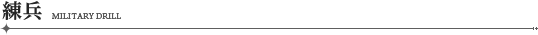

練兵システムとは、若葉マークの付いたプレイヤー（以下、新兵）へ支援を行ったプレイヤーに「練兵ポイント」という褒賞を与えるシステムです。
「練兵ポイント」は、新兵にとって良い支援となり自国に貢献する行為ほど、多く獲得できます。
手に入れた練兵ポイントは、様々なアイテムと交換することができます。

■ 交換できるアイテム
首都マネージャーより「国情報」を開きポイント交換メニューから、練兵ポイントとアイテムを交換することができます。
| ポイント数 | アイテム名 | |
|---|---|---|
| 1 | ベーコン×20 | ステーキ×10 |
| 5 | リジェネレート×50 | パワーポット×50 |
| 15 | ドラゴンソウル | 野獣の血 |
| 30 | ヴィネルワイン×1 | シャンテ特製パン×1 |
| 100 | 先輩（称号） | レアステーキ×20 |
| 200 | オークヘッド | |
| 300 | ジャイアントヘッド（紅） | 熟練兵（称号） |
| 800 | ヴェノモスヘッド | |
| 1200 | グリフォンヘッド | 大師父（称号） |
| 1600 | ナイトヘッド（紅） | |
| 2000 | 完遂の証 | 天尊（称号） |
ポイントが獲得できる新兵支援には、以下の４種類があります。
1. 新兵の卒業
若葉マーク(初心者アイコン)は、戦争に20回参加することで解除されます。
※
同一アカウントにおいていずれかのキャラクターが上記条件を満たした場合、作成されている全キャラクターの若葉マークが解除されます。
また、今後同一アカウント内にキャラクターを作成した場合も、若葉マークは付与されません。
| ポイント獲得条件 | ポイント |
|---|---|
| 新兵の若葉マーク卒業時（卒業時に加入中の部隊員のみ） | 20P |
| 配布方法 |
|---|
|
ポイントは168時間ごとに計算され、配布されます。 ポイントはマネージャーに話しかけることで入手できます。 次の配布時間は、首都マネージャーの国情報より確認することができます。 ※ポイントの配布時間は168時間です。配布時間を過ぎてしまうと、ポイントは入手できません。 |
2. コミュニケーション支援について
首都、ヴィネル島で新兵を支援すると、ポイントを獲得できます。
| ポイント獲得条件 | ポイント | |
|---|---|---|
| トレード | 新兵にアイテムを渡す（1回毎） | 1P |
| 新兵へゴールドを渡す（1000G以上）1回毎 | 1P | |
| パーティ | 新兵とパーティを結成（新兵1人毎） | 1P |
| 新兵へゴールドを渡す（1000G以上）1回毎 | 1P | |
| 新兵が所属しているパーティに参加（新兵1人毎） | 1P | |
| 新兵がパーティを結成 | 1P | |
| 配布方法 |
|---|
| 実行時に加算されます。 |
※
若葉マークを卒業済のキャラクターは、トレード、パーティ参加、パーティ結成によるポイント獲得の権利を最大10回分所有しています。
※ 168時間ごとに、ポイント獲得権は付与されます。
3. 戦争参加支援
新兵とパーティを組んで戦争に参加すると、新兵の活躍に応じたポイントを獲得できます。
一度の戦争で獲得できるポイントには、上限があります。
| ポイント獲得条件 | ポイント | 上限 | |
|---|---|---|---|
| 戦争参加時間 | 新兵とプレイヤーのパーティ参加から15分経過 | 1P | 1P |
| 新兵とプレイヤーの戦争参加時間が全体の50％ | 3P | 3P | |
| 新兵とプレイヤーの戦争参加時間が全体の90％ | 5P | 5P | |
| 新兵のアクション | 新兵のPC与ダメージ1000毎（歩兵時） | 1P | 20P |
| 新兵の建築与ダメージ1500毎（歩兵時） | 1P | 20P | |
| 新兵のPC与ダメージ5000毎（召喚時） | 1P | 4P | |
| 新兵の建築与ダメージ7500毎（召喚時） | 1P | 4P | |
| 新兵が敵を1キルする毎 | 1P | 20P | |
| 新兵がオベリスク建築1本毎 | 2P | 10P | |
| 新兵がその他の建築1本毎 | 1P | 10P | |
| 新兵がナイト召喚1回 | 1P | 3P | |
| 新兵がジャイアント召喚1回 | 1P | 3P | |
| 新兵がレイス召喚1回 | 2P | 6P | |
| 新兵の貢献度30毎 | 1P | 10P | |
| 配布方法 |
|---|
| 戦争終了時に加算されます。 |
- パーティ内に新兵が複数人いる場合、各アクションによる獲得ポイントは合算されます。
- 途中からパーティにプレイヤーが参加した場合、それまでに達成されたポイントは獲得できません。
- 戦争終了前にパーティを離脱した場合、または戦争終了前にパーティが解散した場合ポイントは獲得できません。
- プレイヤーのパーティへの参加時間が15分に満たない場合、ポイントは獲得できません。
- 戦争時間が15分未満だった場合、戦争時間の90%以上パーティに参加している場合のみ5ポイントを獲得できます。
- ポイント獲得条件である「与ダメージ」にダメージボーナスは含まれません。与えたダメージのみが計測対象となります。
また、戦争に勝利すると、参加していた新兵の人数分のポイントを獲得できます。
新兵の行動を支援し、自軍を勝利へ導きましょう。
| ポイント獲得条件 | ポイント |
|---|---|
| 自軍が戦争に勝利した際、自軍の新兵1人毎 | 1P |
| 配布方法 |
|---|
| 戦争終了時に加算されます。 |
5. 部隊支援
新兵を部隊に勧誘し、戦争に参加するとポイントを獲得できます。
| ポイント獲得条件 | ポイント | 上限 | |
|---|---|---|---|
| 部隊活動 | 新兵が部隊加入時（勧誘者のみ） | 1P | - |
| 部隊の解散時（部隊長と勧誘者のみ、所属新兵1人毎） | -2P | - | |
|
新兵の除名時（除名実行者及び勧誘者） ※ 新兵のキャラクターが削除された場合、除隊扱いとなります。 |
-1P | - | |
| 新兵の部隊除名時（部隊長及び勧誘者） | -2P | - | |
|
部隊の 戦争参加 |
同一戦場に新兵部隊員がいる場合、戦争参加時間50％ | -2P | - |
| 同一戦場に新兵部隊員がいる場合、戦争参加時間90％ | 1P | 1P | |
| 新兵のPC与ダメージ5000毎（召喚時） | 2P | 2P | |
| 配布方法 |
|---|
| 実行時、または戦争終了時に加算、減算されます。 |
-
部隊の戦争参加とは、以下の状態を指します。
- 同一戦争に参加している新兵部隊員が15分以上参戦している。
- 同一戦争に参加している新兵でない部隊員が15分以上参戦している。
- 戦争時間が15分未満だった場合、戦争時間の90%以上参加している場合のみ2ポイントを獲得できます。
- 途中からパーティにプレイヤーが参加した場合、それまでに達成された条件によるポイントは獲得できません。
■ その他の注意事項
- 減算によってポイントがマイナスになる場合、-100ポイントが上限となります。
- -100ポイントまで減少した場合、28日間（168時間ごとの更新が4回分）あらゆるポイント獲得ができません。
- 獲得可能なポイントは99999ポイントが上限となります。
- 新兵はポイントを入手することはできません。若葉マークを卒業した時点より、ポイントを獲得することができます。